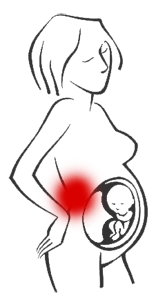

Tudo sobre a coluna vertebral.

Vários factores são responsáveis pelo aparecimento da dor nas costas, entre os quais:
Com o aumento do tamanho do feto e a laxidez ligamentar, há um deslocamento do centro de gravidade para a frente e, consequentemente, há uma acomodação do eixo do equilíbrio, resultando no aumento da lordose lombar.
Esse aumento da lordose lombar leva a um desgaste das articulações intervertebrais, aumentando o risco do aparecimento de lesão do disco intervertebral e causar dor. Se essa discopatia não for prevenida ou tratada durante a gravidez, ela poderá se agravar no pós parto em virtude da fraqueza dos músculos abdominais e da sobrecarga física que os cuidados ao bebê impõe à mãe.
A adoção de posturas adequadas tanto ao sentar, repousar ou nas actividades do quotidiano são importantes para manter a integridade das estruturas da coluna vertebral, que no período da gravidez tornam-se frágeis e mais susceptíveis à traumas.
Exercícios leves de alongamentos e condicionamento feitos a partir do quarto mês de gravidez, e sob supervisão médica, são importantes para manter a flexibilidade e condicionamento físico, prevenindo a dor nas costas, além de auxiliar no equilíbrio emocional e manter as condições físicas ideais da futura mamã durante o período da gravidez.
A natação, hidroginástica ou simplesmente caminhar são actividades físicas que movimentam o corpo globalmente e são as actividades mais indicadas para serem exercitadas durante a gravidez e pós-parto.
O repouso e o relaxamento devem ser executados regularmente, pois a mulher grávida geralmente se sente mais cansada.
Se sentir dor ou desconforto nas costas, procure tratamento fisioterápico em qualquer período da gravidez. Sob a supervisão de seu obstetra, o tratamento fisioterapeutico para a coluna pode ser feito com cuidado, nas seguintes modalidades: calor, alongamentos de cadeias musculares, orientações posturais e ergonómicas.
O uso de cinta pode ajudar a suportar o peso do abdómem, diminuir a lordose lombar e consequentemente, diminuir a pressão sobre as articulações intervertebrais da coluna lombar, prevenindo a dor lombar ou auxiliando no seu tratamento.
Após o período da gravidez, onde o corpo da grávida sofreu mudanças físicas e fisiológicas, a ginástica pós-natal tem a finalidade de devolver à mulher, no menor espaço de tempo, a sua melhor condição física e estética, preparando-a para a sobrecarga física resultante das atividades de cuidado do bebê.
Os exercícios de alongamentos, condicionamento e relaxamento, feitos de maneira progressiva, sob orientação médica e supervisionados por um fisioterapeuta são fundamentais para a recuperação física da mulher e previnem lesões nas estruturas da coluna.